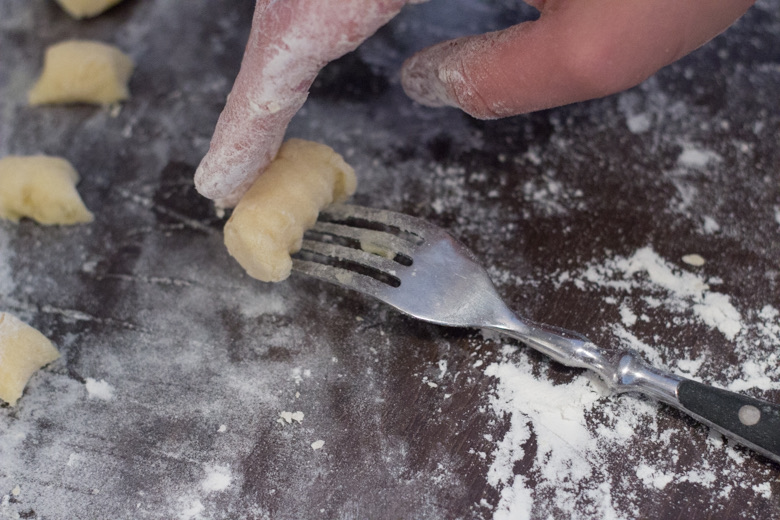
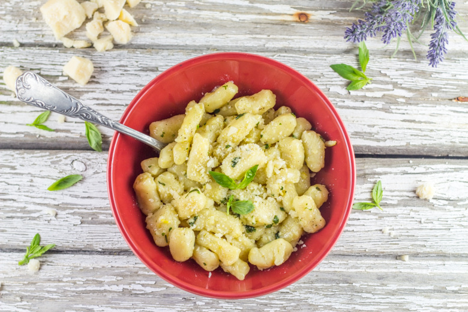
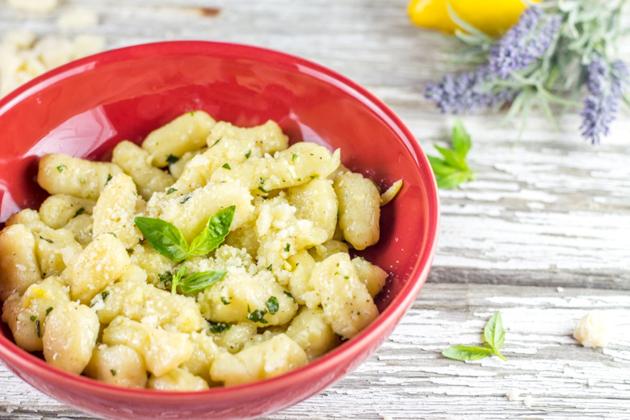

Gnocchi maison à l’ail au basilic et au citron

Voici une recette qui va apporter un peu de soleil dans vos assiettes (à défaut de l’avoir dehors^^ça fait toujours le plus grand bien!)
Aujourd’hui c’est le rendez vous de la 5ème édition de la foodista challenge et c’est Anaïs du magnifique blog lemon and sardine qui était en charge du nouveau thème.
Avant de vous présenter la recette et le thème voici un petit rappel pour vous présenter ce qu’est la Foodista :
Il s’agit d’un défi culinaire, entre blogueurs et non blogueurs autour d’un thème commun décidé par la marraine désignée à chaque édition, crée par… moi-même! J’ai donc fixé les règles du jeu et chaque marraine doit en plus de décider d’un thème, choisir deux règles parmi les suivantes (histoire de pimenter un peu le tout): – Un ingrédient imposé pour les recettes sucrées et un autre ingrédient pour les recettes salées (un ingrédient commun si cela est possible) ; – Une couleur qui devra être présente dans la recette ou dans la décoration ; – Un pays qui inspirera les recettes du thème ; – Un accessoire qui devra se trouver sur les photos
Anciennes éditions : Foodista Challenge #1 : Stéphanie de Cuisine moi un mouton : « Cupcakes & muffins » Foodista Challenge #2 : Lucie de Goulucieusement : « Goûter d’automne » Foodista Challenge #3 : Aude de Contes et Délices : « Le Brunch » Foodista Challenge #4 : Julia de Les Cookines : « Les recettes cosy de Scandinavie »
Anaïs a choisi de nous proposer un thème chaleureux et vitaminé qui viendra égayer le joli mois de Janvier :
Pour cette nouvelle édition il fallait donc cuisiner le citron et proposer une recette originaire du bassin méditerranéen. Quand j’ai lu le nouveau thème j’étais totalement aux anges! Ce thème était fait pour moi… J’ai donc eu envie de faire pleins (pleins pleins pleins) de choses puis finalement je me suis décidée de faire des gnocchis et évidemment des gnocchis avec du citron!
Pour cette foodista, c’est l’Italie qui m’a inspiré! J’ai tout d’abord « testé » mon idée de sauce dans un plat de pâtes « classiques » et j’ai un peu rectifié le jour J! Vous allez voir que cette recette de gnocchi maison que je vous propose est toute simple mais terriblement efficace! On retrouve un peu de soleil dans ce plat et même s’il ne contient pas de vitamine D on y croit! Les odeurs, les couleurs nous emmènent directement au soleil pendant un court instant, bien loin de cette grisaille et ça, ça fait du bien!
Entre ail, basilic, parmesan et citron je vous laisse découvrir cette recette de gnocchis délicieusement parfumés!
Ingrédients
- Pomme de terre - 600g
- Jaune d'oeuf - 1
- Farine - 250g
- Sel - 1 pincée
- Citron - 1
- Beurre - 50g
- Gousses d'ail - 3
- Basilic - 1/2 bouquet
- Sel, poivre
- Muscade
Instructions
- Mettre les pommes de terre dans un grand faitout
- Couvrir d'eau froide et porter à ébullition
- Laisser cuire environ 20 minutes à feu moyen (en fin de cuisson vous devez pouvoir planter un couteau facilement dans la pomme de terre)
- Pendant ce temps préchauffer le four à 160°
- Quand les pommes de terre sont cuites, mettez les au four pendant 4 minutes pour les sécher
- Verser la farine sur votre plan de travail en formant un puits
- Ajouter le jaune d’œuf au centre
- Quand les pommes de terre sont tièdes, passez les au moulin à légumes pour les réduire en purée au dessus de la farine Sinon écrasez les à l'aide d'une fourchette et mettez les au dessus de la farine
- Très délicatement incorporer la purée au reste des ingrédients en la ramenant vers le centre (ne travaillez pas trop la pâte)
- Fariner bien votre plan de travail
- Roulez la pâte en boudins et coupez la en morceaux d'environ 1.5cm
- Déposer les gnocchis dans un grand plat bien fariné au fur et à mesure Si vous voulez reproduire les "rainures" présentes sur les gnocchis du commerce roulez les sur une fourchette comme sur la photo
- Pendant la préparation des gnocchis, récupérer le zeste d'un citron, coupez le en fines lamelles et hacher les gousses d'ail
- Faire fondre le beurre à feu doux dans une poêle et y ajouter le zestes de citron
- Une fois le beurre fondu ajouter l'ail, couper le feu et ajouter le basilic ciselé. Réserver
- Porter à ébullition une grande casserole d'eau salée et faites y cuire les gnocchis (pas tous en même temps c'est mieux)
- Quand ils commencent à remonter à la surface, retirez les avec un écumoire et déposer les dans un grand plat
- Saler et poivrer les gnocchis cuits et arrosez les d'huile d'olive pour qu'ils ne collent pas
- Quand tous les gnocchis sont tous cuits, remettez sur le feu la poêle contenant le beurre et y ajouter les gnocchis
- Remuer délicatement, sur feu doux et ajouter du parmesan
- Laisser cuire 4-5 minutes
- Servir et ajouter le reste du parmesan



Les tips de la communauté
Recette avec un enthousiasme très fort. Les commentaires soulignent l'originalité du mariage ail-citron-basilic et encouragent vivement la réalisation. Certains avouent avoir raté leurs tentatives précédentes.
Astuces
- La recette est simple mais délicieuse avec le mariage saveurs ail, basilic et citron
- Les gnocchis maison sont plus savoureux que ceux du commerce
- La technique est accessible même pour les débutants
- Utiliser de la farine semi-complète pour une variation complète
Variantes suggérées
- Remplacer la farine blanche par de la semi-complète pour une version plus saine
- Adapter la sauce en fonction des préférences de saveur
- Utiliser différents aromates selon les saisons
Ajustements signalés
- Certains ont échoué leur première tentative mais la recette aide à réussir
- Ne pas congeler les gnocchis crus ; si nécessaire, les congeler une fois cuits